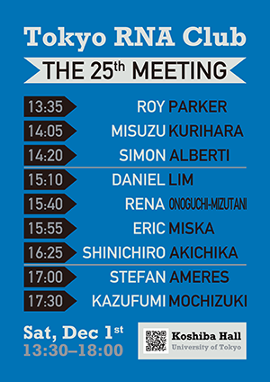
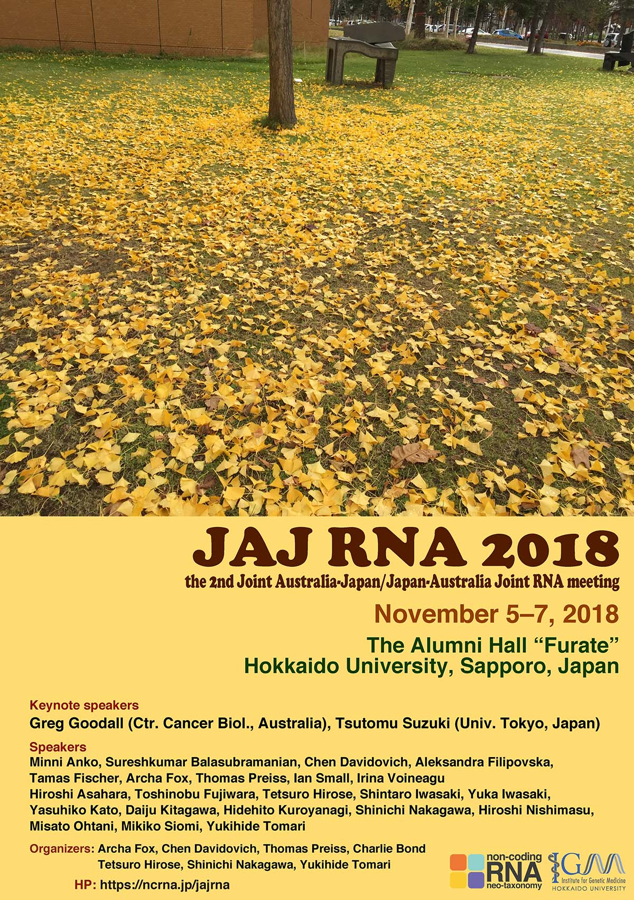
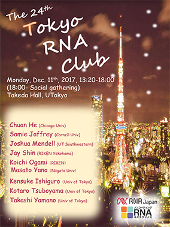
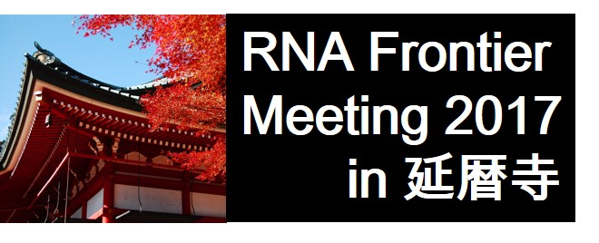
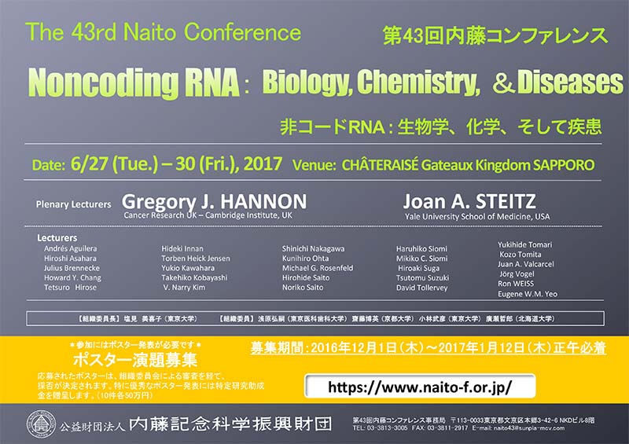

お知らせ
本新学術領域が関係するミーティングなどの最新情報をご案内します。
事後評価結果について
本領域は、研究領域終了後の事後評価において「Ａ＋（研究領域の設定目的に照らして、期待以上の成果があった）」の評点を受けました。科学研究費補助金審査部会における所見等については、こちらをご参照ください。
RNA 2019 Krakow
The 24th Annual Meeting of the RNA Society will be held in Krakow, Poland, from June 11 to June 16, 2019, at the ICE Kraków Congress Centre. Please resiter here.
RiboClub 20th Anniversary
RiboClub 20th Anniversary will be held in Orford, Canada, from September 22 to 27, 2019, at Hôtel Chéribourg. Please resister here.
第25回 Tokyo RNA Club のご案内

オーガナイザー
廣瀬 哲郎
中川 真一
泊 幸秀
北川 大樹
「JAJ RNA 2018」のお知らせ

日時 2018年11月5日（月）9:00 〜 11月7日（水）12:20
会場 北海道大学医学学友会館「フラテ」
協賛 新学術領域「ノンコーディングRNAネオタクソノミ」
事前登録が必要です。詳しくは、こちらのページをご覧ください。
「RNAフロンティアミーティング2018」のお知らせ
RNAフロンティアミーティングは、研究者間の交流による新しい学問領域の開拓と並んで、将来のRNA研究を担う若い人材の育成を目的とした会です。若手研究者や大学院生を中心に、口頭発表および討論の機会を設け、さらには研究者間の交流や親睦をはかることを理念としています。今年は温泉などで有名な箱根を舞台に、活発な研究成果発表や討論が繰り広げられることと期待しております。また、新しい実験手法や技術の開発についての発表も大歓迎です。
日時 2018年9月19日(水) ～9月21日（金）
場所 ホテルおかだ
世話人 池内与志穂（東京大学）・岩崎信太郎（理化学研究所）
詳しくはこちらのページをご確認ください。
第24回 Tokyo RNA Club のご案内

オーガナイザー
鈴木 勉
中川真一
廣瀬哲郎
13:20 Opening Remark
13:30 Samie Jaffrey (m6Am epitranscriptome)
14:00 Masato Yano (Qki5)
14:20 Kotaro Tsuboyama (Argonaute movement)
14:40 Joshua Mendell (lncRNA NORAD)
15:10 Coffee
15:40 Jay Shin (Single cell)
16:10 Koichi Ogami (NEXT function)
16:30 Takashi Yamano (CRISPR)
16:50 Kensuke Ishiguro (rRNA methylation)
17:10 Chuan He (epitranscriptome)
17:40 Closing Remark
17:50 Social Hour
第23回 Tokyo RNA Club のご案内
 来る6月26日(月)、東京大学武田ホールにて、本領域後援の第23回 Tokyo RNA Club が開催されます。Joan A Steitz博士、Julius Brennecke博士、Howard Y Chang博士など、RNA研究の第一人者が一堂に会し、最新の知見を紹介していただく予定です。参加費は無料ですが、事前参加登録が必要です。こちらのページからお早めにお申し込み下さい。
来る6月26日(月)、東京大学武田ホールにて、本領域後援の第23回 Tokyo RNA Club が開催されます。Joan A Steitz博士、Julius Brennecke博士、Howard Y Chang博士など、RNA研究の第一人者が一堂に会し、最新の知見を紹介していただく予定です。参加費は無料ですが、事前参加登録が必要です。こちらのページからお早めにお申し込み下さい。
RNAフロンティアミーティング2017のご案内

The 43th Naito Conferenceのご案内

Noncoding RNA: Biology, Chemistry, & Diseases
日程： 2017年6月27日〜30日
会場： シャトレーゼ ガトーキングダム サッポロ
財団ホームページからお申し込みください。
http://www.naito-f.or.jp